농사를 대신 짓지 않습니다.
소유자가 농지를 지킬 수 있게 돕습니다.
올바른농지는 투자·장기보유·상속으로 농지를 가진 분이 지금 어느 단계인지 이해하고, 적법한 선택지 안에서 실제 영농을 실행할 수 있도록 진단·계획·교육·실행을 돕는 농지 전문 컨설팅입니다.
대표 소개
농지 컨설팅은 결국 사람이 하는 일입니다. 누가, 어떤 경험으로 하는지부터 보여드립니다.
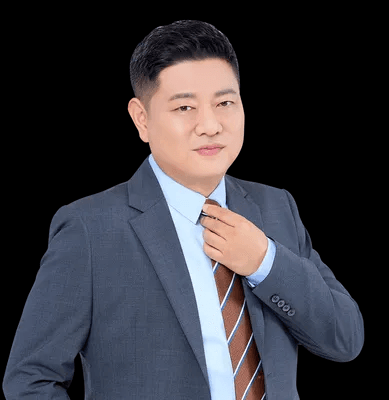
"토지와 경매를 가르치면서, 농지를 취득하고도 농지법 의무를 몰라 처분명령까지 가는 분들을 너무 많이 봤습니다. 농지는 사는 순간이 아니라 갖고 있는 동안이 문제입니다."
이주왕 교수는 서울사이버대학교 부동산학과 겸임교수로 토지·경매 분야를 가르치며, 이주왕kok경매학원을 운영하고 있습니다. 『명품 토지 중개 실무』(매일경제신문사)를 공저했고, SBS Biz 머니쇼 등에 출연해 토지 시장을 해설해 왔습니다. 2026년 농지 전수조사를 앞두고, 농지 소유자가 적법하게 영농을 실행하고 그 기록을 남길 수 있도록 돕기 위해 올바른농지를 설립했습니다.
- 현재올바른농지 대표이사 · 이주왕kok경매학원 대표 · 서울사이버대학교 부동산학과 겸임교수
- 저서『명품 토지 중개 실무』(공저, 매일경제신문사) · 『'왕교수'가 알려주는 부자되는 100억 경매』(오스틴북스)
- 방송SBS Biz 「머니쇼」 출연 — 토지·빌딩 시장 해설
- 강의단국대·경기대·영남대·경남대·가톨릭대·건국대 미래지식교육원 등 대학, LH·경찰청·한국공인중개사협회 등 기관, 에듀윌·해커스·메가랜드 출강
- 농사를 대신 짓지 않습니다.
- 농지법 조문과 농식품부 지침으로 설명합니다.
- 필요 없는 서비스는 권하지 않습니다.
강의 · 출강 이력
대학과 공공기관, 교육기업에서 토지·경매·중개 실무를 강의했습니다. 제휴·협약이 아닌 출강 이력입니다.
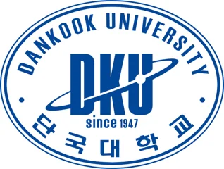
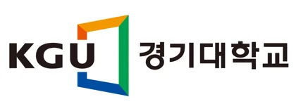
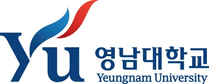
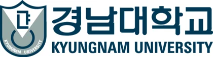
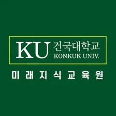
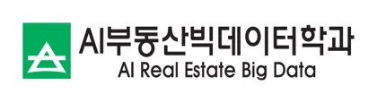
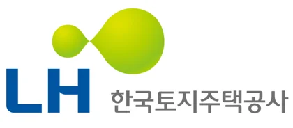
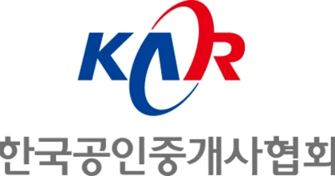
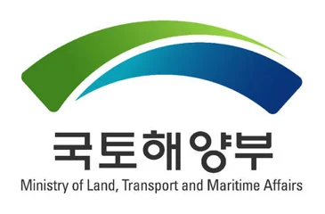
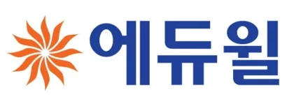
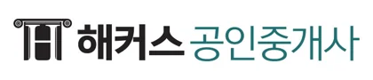
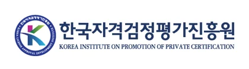
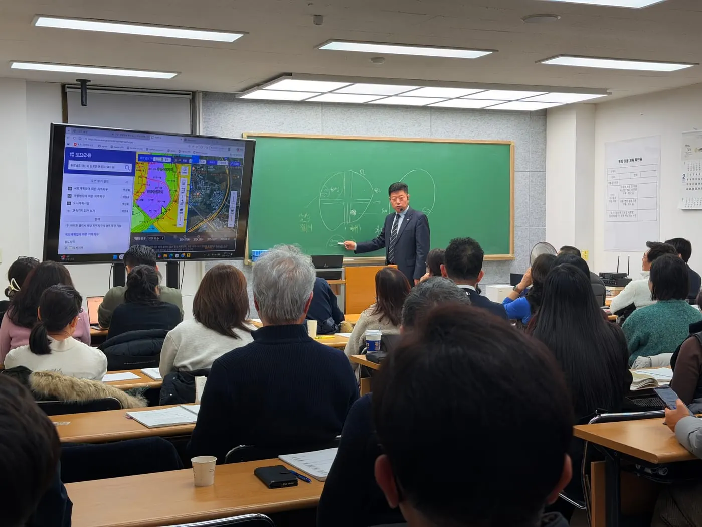
저서
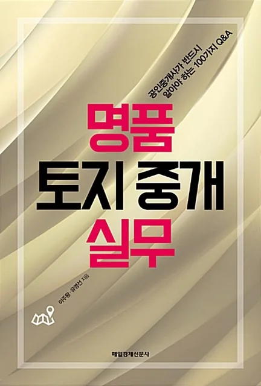
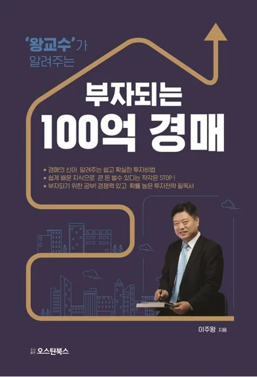
기준과 원칙
우리 말이 아니라 법 조문과 지침이 기준입니다. 하는 일과 하지 않는 일을 먼저 밝힙니다.
농지법 조문
제10조·제11조·제12조·제63조(시행 2026.8.28.)를 기준으로 단계를 설명합니다. 법제처 원문 보기
농식품부 지침
「농지 전수조사 시행지침」·「추진계획」(2026)의 대상·일정·방식을 그대로 인용합니다. 농림축산식품부
현장 기록
모든 작업은 일자·내용·사진으로 기록해 소유자가 언제든 확인할 수 있게 합니다.
하는 일
- 농지 이용상태 사전진단 — 지금 어느 행정단계인지 정리
- 처분명령·이행강제금 대응방향 컨설팅 — 단계·기한·법정 선택지
- 실제 영농을 위한 실행계획 설계 — 작물·수목·장비·월별 일정
- 경작 동반 — 소유자의 농업경영을 전제로 한 농작업 지원
- 영농기록 작성·관리방법 안내 — 작업사진·관리기록 제공
- 자격이 필요한 사안의 전문가 연계 — 행정사·변호사·세무사
하지 않는 일
- 대리경작 · 허위경작 · 형식적인 식재
- 농지법상 허용되지 않는 위탁경영의 권유·중개·광고
- "전수조사 안 걸리게" · "25% 면피" · "처분명령 100% 해결" 같은 약속
- 처분명령 취소·이행강제금 면제의 보장
- 이의제기·행정심판·소송 대리 등 자격이 필요한 업무의 직접 수행
- "이 제품을 사면 해결된다"는 식의 묘목·장비 판매
이해관계 공개
- 묘목·장비를 팔지 않습니다. 특정 수종이나 제품을 권해서 얻는 수익이 없습니다.
- 협력 전문가 비용은 별도이며 직접 지불합니다. 올바른농지는 소개 수수료를 받지 않습니다.
- 이주왕kok경매학원과는 별개 사업입니다. 이 사이트에서 학원 수강을 권유하지 않습니다.
- 진단 결과가 "문제 없음"이면 서비스를 권하지 않습니다. 그 결과도 그대로 알려드립니다.
진단은 이렇게 결론을 냅니다
- 단계 판정조사 대상인지, 처분의무·처분명령 중 어디에 있는지, 유예(§12) 사유가 있는지 먼저 정합니다.
- 조문 근거판정마다 근거 조문과 지침 문구를 함께 드립니다. "우리 경험상"이 아니라 "제○조에 따라"로 말합니다.
- 선택지 전부영농 실행, 임대(농지은행), 처분 등 법이 허용하는 선택지를 모두 놓고 비교합니다. 하나만 밀지 않습니다.
방송 · 언론
대표 이주왕 교수의 방송 출연과 언론 보도입니다. 제목과 매체는 원문 그대로 표기합니다.
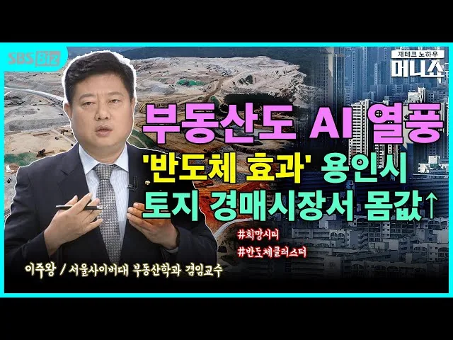
방송 · SBS Biz 「머니쇼」부동산도 AI 열풍 — '반도체 효과' 용인시 토지 경매시장서 몸값↑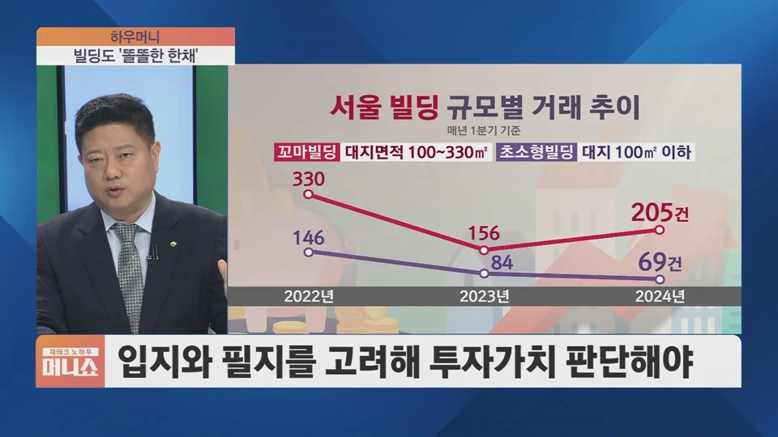
방송 · SBS Biz 「머니쇼」 하우머니빌딩도 '똘똘한 한 채' — 입지와 필지를 고려해 투자가치 판단해야방송 화면은 출연 사실 확인을 위한 캡처이며, 저작권은 해당 방송사에 있습니다.
함께하는 곳
컨설팅과 자격 업무를 분리하고, 각자의 역할 안에서 협력합니다.
토지·경매로 농지를 취득하려는 분께 "농지는 취득한 순간부터 의무가 시작된다"를 가르칩니다. 취득 전 단계의 농지법 교육을 맡습니다.
이의제기, 행정심판·소송, 처분명령 취소 등 자격이 필요한 사안을 맡습니다. 컨설팅과 별도로 진행되며 비용도 별도입니다.
8년 자경 양도세 감면, 상속·증여 농지의 세무 검토를 맡습니다.
경운·식재·제초·수확 등 경작 동반 서비스의 현장 작업을 소유자와 함께합니다. 작업마다 사진과 기록을 남깁니다.
- 자격·등록을 확인한 곳과만 협력합니다.
- 비용은 소유자가 각 기관에 직접 지불하며, 올바른농지는 소개 수수료를 받지 않습니다.
- 로고와 명칭은 사용 동의를 받은 곳만 표기합니다.
상담 신청
이름과 연락처만 남겨주시면 전화로 농지 상황을 확인하고, 도울 수 있는 범위와 비용을 안내합니다. 범위와 비용에 동의하신 뒤에만 진행하며, 무료진단만 받고 마치셔도 됩니다.
- 신청이름·연락처를 남깁니다.
- 전화 확인농지 상황과 필요한 정보를 여쭤봅니다.
- 범위·비용 안내도울 수 있는 부분과 유료 서비스 조건을 설명합니다.
- 동의 후 진행확인·동의하신 범위만 진행합니다.
- 전화 상담 · [상담 가능 시간][상담전화]
- 카카오톡 채널올바른농지 채널 열기
- 이메일이메일 문의